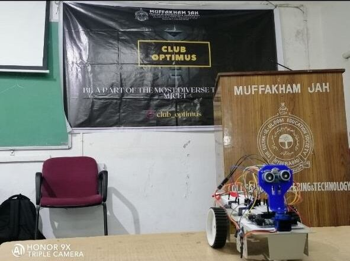
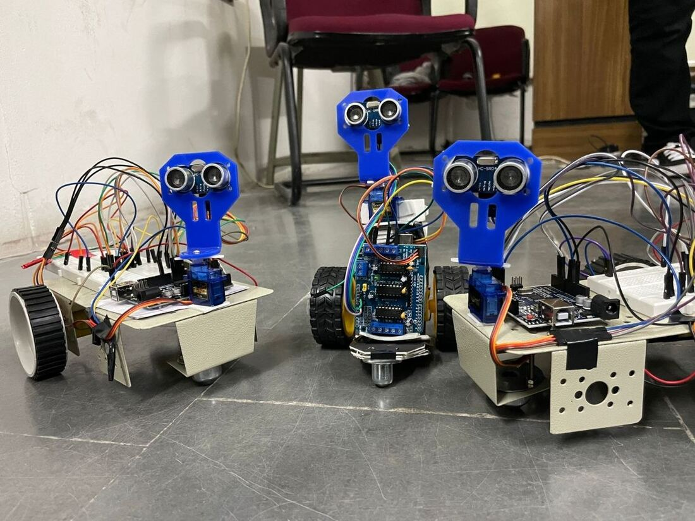

17 / AUTONOMY
Obstacle Avoiding Bot
A bot that detects and avoids obstacles by itself, with no operator input.
- Role
- Build and integration
- Context
- Club Optimus, MJCET, Oct – Nov 2021
- Tools
- Ultrasonic ranging, obstacle-avoidance logic, Arduino, motor driver
- Scope
- A self-driving platform that navigates around what is in front of it
- Output
- A bot that runs unattended without hitting obstacles
- Skills
- Ultrasonic sensing
- Obstacle-avoidance logic
- Arduino
- Motor driver control
A bot created to avoid obstacles by itself, without any human help. An ultrasonic sensor on the front measures the distance to whatever is ahead; when that distance drops below a threshold, the bot stops, turns and picks a clear path.
It is the simplest useful form of autonomy: sense, decide, act, repeat. Several were built in the same batch at Club Optimus.


Ultrasonic rangingFully autonomousArduino driven
Ultrasonic sensingObstacle-avoidance logicArduinoMotor driver control